前言
Spark Rpc 所有的请求或响应统称为消息，它们都有着共同的格式。本篇文章会先介绍消息格式，然后介绍基于 Netty 框架，如何解析和处理消息，并且还介绍了如何处理数据大的请求。
消息格式
|
|
frame size 表示后面的数据长度，至少包括 type 和 header，有些消息还会包含 body。
header 根据消息种类的不同，格式也不一样。一般 header 数据都比较小。
body 根据消息种类的不同，格式也不一样。有的消息的 body 比较大，而有些消息甚至没有 body 。
比如 RpcRequest 消息, 它的 frame size 表示 type，header 和 body 三部分的总长度。StreamResponse 消息，它的 frame size 只表示 type 和 header 两部分的长度。而RpcFailure 消息，只有 header 部分。
Netty 处理管道
Netty 的 处理消息，都是依靠 ChannelHandler 链来处理的。它的调用链如图所示：
Channel Handler 介绍
TransportFrameDecoder
Netty 在解析消息时，必须至少读取到 frame size 长度的数据，才能处理消息。
TransportFrameDecoder 负责解析消息。它会先解析出 frame size 的值，然后继续等待数据，直到读取的数据长度至少等于 frame size ，才会进一步传递给下个 Handler 处理。它会将这些数据存到缓存里，所以使用这种方式，必须要能保证 frame size 较小。所以对于 body 数据比较大的情况，比如对于 StreamResponse 消息表示 shuffle 数据传输，一般都比较大 它的 frame size 是不包括 body 的。
处理这种大消息，也是和 TransportFrameDecoder 有关。 它有一个特殊的 Interceptor 实例，用来处理这种消息。
- TransportFrameDecoder 负责读取完 type 和 header 数据，然后传递给下个 Handler 处理
- 当最终的 TransportChannelHandler 接收到上一部传来的数据后，它会根据消息类型，实例化出 Interceptor 对象，存放到 TransportFrameDecoder，负责处理 body 数据。
- 当 body 数据处理完后，就把 Interceptor 实例设置为 null。
MessageDecoder
MessageDecoder 接收上一步传来的数据，负责根据 type 字段，实例化对应的消息。之后传递 TransportChannelHandler处理。消息类型如下：
|
|
MessageEncoder
它负责将消息编码成上述格式，因为MessageEncoder原理比较简单，所以不做详细介绍。
IdleStateHandler
这个 Handler 是 netty 内置的，用于长连接中，客户端和服务端发送心跳包，表示自身还存活。
核心 ChannelHandler
TransportChannelHandler 是最为核心的 Handler，前面的 Handler 只是用来解析消息，而它负责最核心的处理程序。根据消息是客户端发送的请求消息，还是服务端发送的响应消息，分为两种处理方式。
请求消息处理
服务端会负责处理请求消息，由 TransportRequestHandler 类负责。根据消息类型不同，处理的程序也不一样。
响应消息处理
客户端负责处理响应消息，由 TransportResponseHandler 类负责。根据消息类型不同，处理的程序也不一样。
Rpc 响应消息
这类消息是客户端发起 rpc 请求返回的响应，它有一个 requestId 来标识自己。客户端发起请求时，会生成一个唯一的 requestId，并且还会保存回调函数。这样当收到响应时，就根据 requestId 执行对应的回调函数。
Chunk 响应消息
Chunk 消息用来传输数据用的，它有一个 StreamChunkId 用来标识自己。客户端在发起Chunk 请求消息时，会保存这个消息的回调函数。这样当收到响应时，就根据 StreamChunkId 执行对应的回调函数。
Stream 响应消息
Stream 消息用来传输大数据。它发送请求时，必须按照顺序发送。因为存储 Stream 响应消息的回调函数，是用队列存储的。
StreamResponse 消息的 frame size 是不包括 body 数据的，所以它在读取完 header 数据的时候，生成了 StreamInterceptor 实例负责处理 body 数据。然后把 StreamInterceptor 实例保存到 TransportFrameDecoder 里，等待调用。
Buffer 之间的转换
消息一般都被序列化成二进制数据，然后发送出去。因为数据可能是Netty 的内置 ByteBuf 实例，也可能是 java 内置的 ByteBuffer，还有可能是存储在文件中。Spark 为了统一多种实例之间的转换，抽象了 ManagedBuffer 接口。
|
|
ManagedBuffer 的子类负责接收每个种类的数据：
- NettyManagedBuffer 负责接收 Netty 的 ByteBuf
- NioManagedBuffer 负责接收 Java 的 ByteBuffer
- FileSegmentManagedBuffer 负责接收文件数据
文件数据
FileSegmentManagedBuffer 接收文件，它在传输大型 shuffle 文件数据时特别有用，它利用了 Netty 的零拷贝，避免了数据多次拷贝。
它通过下面三个属性描述了数据的存储位置
|
|
继续看看它是如何转换成 ByteBuffer 实例的。如果数据小于指定的值（由 spark.storage.memoryMapThreshold 配置指定，默认为2MB），那么直接在堆中分配 ByteBuffer 实例，将数据存储其中。否则，采用内存映射的方式。
|
|
再继续看看它是如何转为 Netty 支持的数据。它返回FileRegion实例，利用了 Netty 的零拷贝技术。
|
|
Netty 内置数据
NettyManagedBuffer 接收 Netty 内置 ByteBuf
|
|
Java 内置数据
NioManagedBuffer 接收 Java 内置的 ByteBuffer。
|
|